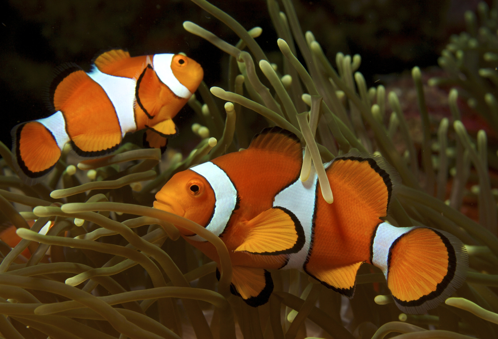

Complete Marine & Saltwater Fish Care Guide
Practical marine-aquarium help for reef tanks and fish-only systems, including fish health, coral basics, and water chemistry. Use the assistant for setup planning, species matching, treatment options, and stability checks.
Why Marine Aquarists Trust Us
Saltwater fishkeeping is one of the most rewarding but demanding hobbies in the aquarium world. Our AI-powered marine aquarium assistant helps you navigate the complexities of saltwater chemistry, equipment selection, and livestock compatibility so you can build and maintain a thriving marine ecosystem.
Whether you're planning your first FOWLR tank, battling nuisance algae in your reef, or trying to keep a mandarin goby feeding, our platform provides detailed, experience-backed guidance tailored to your specific tank type, inhabitants, and goals.
We help you understand the nitrogen cycle in saltwater systems, proper quarantine protocols, and connect you with quality equipment and supplies from industry-leading marine aquarium brands.
Get Instant Marine Aquarium Help
Our AI assistant is trained on extensive saltwater aquarium resources and can help with tank cycling, water parameter troubleshooting, fish disease identification, coral care, equipment recommendations, and emergency situations. Ask any question about your marine aquarium.
Browse Marine Fish Species
Explore detailed care profiles for 25 popular saltwater aquarium fish. Each guide covers tank size requirements, water parameters, diet, compatibility, reef safety, and difficulty level.
Clownfish
The iconic reef fish made famous by Finding Nemo. Hardy, colorful, and one of the best beginner saltwater fish. Pairs with anemones but does not require one in captivity.
Blue Tang
Striking blue surgeonfish requiring a large aquarium (180+ gallons). Active swimmer prone to ich. Beautiful but demands experienced care and ample swimming space.
Yellow Tang
Brilliant yellow herbivore and excellent algae grazer. Needs a 100+ gallon tank with plenty of swimming room. Reef safe and a staple of the saltwater hobby.
Coral Beauty
One of the most popular dwarf angelfish with stunning purple and orange coloration. Generally reef safe with caution - may nip at certain corals. Hardy and relatively easy to keep.
Flame Angelfish
Vivid red-orange dwarf angelfish prized for its intense coloration. Reef safe with caution. Thrives in established tanks with plenty of live rock for grazing and hiding.
Emperor Angelfish
Majestic large angelfish with dramatic blue and yellow striping. Requires a very large tank (220+ gallons). Not reef safe - will eat corals and invertebrates. For FOWLR systems.
Royal Gramma
Beautiful purple-and-yellow basslet that is peaceful, hardy, and reef safe. Excellent beginner marine fish. Prefers caves and overhangs in the rockwork. Territorial toward its own kind.
Mandarin Goby
Perhaps the most beautiful marine fish with psychedelic blue-green-orange patterning. Challenging to keep - requires a mature tank with a large copepod population for feeding.
Watchman Goby
Bottom-dwelling sand-sifting goby that often forms symbiotic pairs with pistol shrimp. Hardy, reef safe, and entertaining to watch. Great choice for beginners.
Firefish
Elegant, peaceful dartfish with a white body fading to brilliant red-orange tail. Reef safe and easy to care for. Known jumpers - requires a tight-fitting lid on the aquarium.
Six-Line Wrasse
Small, active wrasse with six horizontal purple lines on an orange body. Reef safe and helps control flatworms and pyramidellid snails. Can become territorial in smaller tanks.
Fairy Wrasse
Stunning, peaceful wrasse genus with many color varieties. Reef safe and active open-water swimmers. Males display brilliant colors during courtship. Need a secure lid as they jump.
Powder Blue Tang
Strikingly beautiful surgeon with a powder blue body, yellow dorsal, and black face mask. Demanding species highly prone to ich. Requires pristine water and a large, established tank.
Bangai Cardinal
Elegant black-and-silver striped cardinalfish that is peaceful, reef safe, and easy to breed in captivity. Slow-moving and best kept in pairs or small groups with gentle tankmates.
Copperband Butterfly
Delicate butterfly fish with orange-copper vertical bands and a long snout. Often sought to control Aiptasia anemones. Difficult to feed - requires careful acclimation to prepared foods.
Foxface Rabbitfish
Bright yellow algae-eating powerhouse with a striking black-and-white face. Reef safe and excellent for controlling nuisance algae. Venomous dorsal spines require careful handling.
Flame Hawkfish
Bold, bright red perching fish that sits on corals and rocks watching for prey. Hardy and entertaining with a big personality. May eat small shrimp and crabs in reef tanks.
Green Chromis
Iridescent blue-green schooling damselfish and one of the most peaceful marine fish. Best kept in groups of 5 or more. Reef safe, hardy, and an excellent beginner species.
Maroon Clownfish
The largest and most aggressive clownfish species with deep maroon coloring and gold or white bars. Pairs strongly with bubble tip anemones. Females can reach 6+ inches and dominate tankmates.
Dottyback
Small, vibrantly colored fish available in purple, magenta, and bicolor varieties. Hardy and reef safe but can be territorial and aggressive toward smaller, peaceful fish.
Kole Tang
Excellent algae-grazing tang with a dark chocolate-brown body and fine blue-gold striping. Smaller than many tangs, suitable for 75+ gallon tanks. Reef safe and generally peaceful.
Longnose Hawkfish
Distinctive red-and-white checkered hawkfish with an elongated snout. Perches on corals and gorgonians watching for food. Hardy and reef safe but may eat very small shrimp.
Cleaner Wrasse
Fascinating fish that sets up cleaning stations to remove parasites from other fish. Controversial in the hobby due to difficult feeding requirements - many refuse prepared foods in captivity.
Blue Damsel
Brilliant electric-blue damselfish that is extremely hardy but can be highly territorial and aggressive, especially as it matures. Often used for cycling but difficult to remove later.
Melanurus Wrasse
Colorful, active wrasse with blue, green, and red patterning. Excellent reef-safe pest controller that eats flatworms, pyramidellid snails, and bristleworms. Hardy and easy to feed.
Marine Aquarium Basics
Saltwater aquariums require a solid understanding of water chemistry and biological filtration. Mastering these fundamentals is the key to long-term success.
The Nitrogen Cycle in Saltwater
The nitrogen cycle is even more critical in marine systems, where fish are less tolerant of water quality issues than freshwater species.
- Ammonia (NH3): Produced by fish waste, uneaten food, and decaying matter - toxic at any detectable level
- Nitrite (NO2): First bacterial conversion product - also toxic at any detectable level
- Nitrate (NO3): Final product - less toxic but should remain below 20 ppm (below 5 ppm for reef tanks)
- Live rock: The primary biological filtration in marine tanks - porous rock colonized by beneficial bacteria
- Cycling timeline: 4-8 weeks using live rock; can be accelerated with quality bacterial supplements
- Cycle is complete when: Ammonia and nitrite read 0 ppm with nitrate present after adding an ammonia source
Essential Water Parameters
Marine fish and especially corals require stable, precise water chemistry. Test regularly and address issues before they become crises.
- Temperature: 76-80F (stable within 1-2 degrees daily)
- Salinity: 1.024-1.026 specific gravity (use a refractometer, not a hydrometer)
- pH: 8.1-8.4
- Alkalinity: 8-12 dKH (critical for reef tanks - buffers pH and provides carbonate for corals)
- Calcium: 380-450 ppm (essential for coral growth)
- Magnesium: 1250-1350 ppm (enables calcium and alkalinity to remain in balance)
- Phosphate: Below 0.03 ppm for reef tanks (fuels nuisance algae at higher levels)
Essential Equipment
Marine aquariums require more specialized equipment than freshwater setups. Investing in quality equipment upfront saves money and livestock long-term.
- RO/DI system: Removes chlorine, chloramine, heavy metals, silicates, and phosphates from tap water - essential for marine tanks
- Protein skimmer: Removes dissolved organic compounds before they break down - the most important filtration device
- Quality salt mix: Use a reputable marine salt mix (Instant Ocean, Red Sea, Fritz) - never table salt
- Refractometer: Accurate salinity measurement (hydrometers are unreliable)
- Powerheads: Marine fish and corals need strong, variable water flow (10-20x tank volume turnover per hour)
- Heater with controller: Maintain stable temperature with a reliable heater on an external thermostat
- Test kits: At minimum: ammonia, nitrite, nitrate, pH, alkalinity, calcium, magnesium
- Reef lighting (if keeping corals): Quality LED fixtures with appropriate spectrum and PAR values
Reef Tank vs. FOWLR: Which Is Right for You?
Choosing between a reef aquarium and a fish-only-with-live-rock (FOWLR) system is one of the first major decisions for marine hobbyists.
FOWLR (Fish Only With Live Rock)
Best for: Beginners to saltwater, those who want larger or more aggressive fish, budget-conscious hobbyists.
- Pros: Lower equipment costs, more forgiving of water parameter fluctuations, can use copper medications directly, wider fish selection (including species not reef safe)
- Cons: Less visually diverse than reef tanks, still requires water quality maintenance, no corals or most invertebrates
- Typical inhabitants: Tangs, angelfish, triggers, lionfish, puffers, wrasses, groupers
- Lighting: Basic LED or fluorescent sufficient - no need for expensive reef lights
- Estimated startup cost: $500-$1,500 depending on tank size
Reef Tank
Best for: Experienced hobbyists, those who want a living coral ecosystem, dedicated long-term aquarists.
- Pros: Stunning visual diversity with corals, anemones, and invertebrates; deeply rewarding hobby; can propagate corals
- Cons: Higher equipment and ongoing costs, stricter water parameters, cannot use copper medications, requires more knowledge and time
- Typical inhabitants: Reef-safe fish (clownfish, chromis, gobies, wrasses) plus soft corals, LPS, SPS, anemones, shrimp, snails
- Lighting: Quality reef LED (Radion, AI Hydra, Kessil) or T5 fixtures required for coral growth
- Estimated startup cost: $1,500-$5,000+ depending on tank size and coral selection
Our Recommendation for Beginners
Start with a FOWLR system to learn saltwater fundamentals without the added complexity of coral care. Once comfortable with water chemistry and maintenance routines (typically 6-12 months), transition to a reef by adding easy soft corals like mushrooms, zoanthids, and leather corals. This graduated approach sets you up for long-term success.
Trusted Marine Aquarium Partners
People Also Ask: Marine Aquarium Questions
Experienced fish owners consistently report that paying attention to this detail early on prevents larger problems down the road. Start with the fundamentals and refine your approach as you learn your fish's individual preferences and needs.
How Do I Start a Saltwater Aquarium as a Beginner?
Starting a saltwater aquarium requires more investment and patience than freshwater, but the results are spectacular.
Step-by-step beginner setup:
- Choose your tank: 40+ gallons recommended (larger tanks are more stable and forgiving)
- Set up RO/DI water system: Essential for removing impurities from tap water
- Install equipment: Protein skimmer, heater on thermostat, powerheads, return pump
- Mix saltwater: Use quality salt mix to 1.025 specific gravity at 78F
- Add live rock: 1-1.5 lbs per gallon provides biological filtration and aquascaping
- Cycle the tank: Wait 4-8 weeks until ammonia and nitrite read 0 ppm
- Add cleanup crew: Snails, hermit crabs to control algae during the ugly stage
- Add first fish: Start with 1-2 hardy species (clownfish, chromis, royal gramma)
- Stock slowly: Add new fish no more frequently than every 2-3 weeks
Budget estimate: $500-$1,500 for a basic FOWLR setup; $1,500-$5,000+ for a reef-ready system.
What Are the Best Beginner Saltwater Fish?
The best starter marine fish are hardy, disease-resistant, easy to feed, and peaceful:
- Ocellaris Clownfish: The classic beginner fish - hardy, colorful, readily available as captive-bred
- Green Chromis: Peaceful schooling fish, very hardy, reef safe
- Royal Gramma: Beautiful, hardy, peaceful, and reef safe
- Firefish: Elegant and easy to keep (needs a secure lid)
- Watchman Goby: Bottom-dwelling, hardy, fascinating with a pistol shrimp partner
- Bangai Cardinalfish: Peaceful, easy to feed, often captive-bred
- Coral Beauty Angelfish: Hardy dwarf angel, generally reef safe with caution
Avoid as first fish: Tangs (need large tanks), mandarin gobies (specialized diet), butterflies (difficult feeders), and any wild-caught delicate species.
How Do I Treat Marine Ich (Cryptocaryon)?
Marine ich is NOT the same as freshwater ich and requires different treatment. Never use freshwater ich medications in saltwater.
Proven treatment methods (all require a separate quarantine tank):
- Copper treatment: Therapeutic copper (Seachem Cupramine or copper sulfate) maintained at 0.5 ppm for 30 days in quarantine - requires daily copper testing with a compatible test kit
- Hyposalinity: Lower QT salinity to 1.009 specific gravity for 4-6 weeks - stressful but effective and medication-free
- Tank Transfer Method (TTM): Move fish between sterile containers every 72 hours for 4 transfers - disrupts parasite lifecycle
Critical: The display tank must remain fishless (fallow) for a minimum of 72 days to starve out the parasite. Invertebrates, corals, and live rock can remain. Any fish added without proper quarantine risks reintroduction.
Prevention: Quarantine ALL new fish for 4-6 weeks with prophylactic copper treatment before adding to your display tank. This single practice prevents the vast majority of marine disease outbreaks.
Why Is My Saltwater Aquarium Growing Nuisance Algae?
Algae outbreaks in marine tanks are almost always caused by excess nutrients and/or light:
Common causes:
- High phosphate: From tap water, overfeeding, or low-quality frozen foods (test and keep below 0.03 ppm)
- High nitrate: From insufficient biological filtration, overstocking, or inadequate water changes
- Tap water: Contains silicates, phosphate, and nitrate - always use RO/DI water
- Excessive photoperiod: Run lights 8-10 hours per day maximum
- New tank syndrome: Diatom blooms (brown algae) are normal in new tanks and resolve on their own
Solutions:
- Use RO/DI water for all water changes and top-offs
- Increase protein skimmer efficiency
- Add phosphate-removing media (GFO) to your filter
- Reduce feeding amounts
- Add a cleanup crew (snails, hermit crabs, urchins)
- Add herbivorous fish (tangs, foxface, blennies)
- Consider a refugium with chaetomorpha macroalgae for natural nutrient export
How Often Should I Do Water Changes in My Saltwater Tank?
Regular water changes are essential for maintaining stable chemistry and replenishing trace elements.
Recommended schedules:
- FOWLR tanks: 15-20% biweekly or 10% weekly
- Reef tanks: 10-15% weekly for best results
- New tanks (first 3 months): 10-15% weekly to manage nutrient swings
Water change protocol:
- Mix saltwater with RO/DI water 24 hours in advance with a heater and powerhead
- Match temperature to within 1F of the display tank
- Match salinity to within 0.001 of the display tank
- Siphon detritus from the sand bed and behind rocks during changes
- Test the new saltwater before adding to ensure parameters match
Top-off water: Replace evaporated water daily with fresh RO/DI water only (not saltwater) - as water evaporates, salt stays behind, so salinity rises. An auto-top-off (ATO) system automates this critical task.
Common Marine Aquarium Topics
Our AI assistant can help with these frequently asked saltwater aquarium questions:
- My clownfish has white spots — is it marine ich?
- What is the best protein skimmer for my tank size?
- How long should I quarantine new saltwater fish?
- Why is my coral turning white or brown?
- Can I keep a blue tang in a 75-gallon tank?
- How do I set up a refugium with chaetomorpha?
- Why is my alkalinity dropping so fast?
- What cleanup crew do I need for my reef tank?
Marine Aquarium Emergency Warning Signs
Take immediate action if you observe:
- Fish gasping at the surface or breathing rapidly (oxygen depletion or ammonia spike)
- White spots appearing on multiple fish (marine ich outbreak - quarantine immediately)
- Sudden coral bleaching or tissue recession (check temperature, alkalinity, and salinity)
- Cloudy water with a foul smell (bacterial bloom or die-off - large water change immediately)
- Fish refusing food and hiding (stress, disease, or water quality issue)
- Equipment failure (heater, return pump, or skimmer - address within hours)
- Salinity swings from ATO malfunction (test and correct gradually)
First response: Test ammonia, nitrite, pH, temperature, and salinity immediately. Perform a 25-50% emergency water change if ammonia or nitrite is detected. Ensure all equipment is functioning. Isolate visibly sick fish to a quarantine tank.
You Might Also Like
Getting this right is about observation and adjustment. Track what works, note what doesn't, and refine your approach as you learn more about your pet's responses.
Fish Species A-Z
Popular aquarium fish with complete care information
Cost Calculator
Estimate annual aquarium costs
Breed Finder
Find the right fish species for your setup
Dog Care Guide
Practical help for dog owners
Cat Care Guide
Practical help for cat owners
Bird Care Guide
Practical help for bird owners
Pet Adoption Guide
Finding and adopting the right pet
New Pet Checklist
New-pet setup checklist
Disclaimer
The information provided is educational and intended to help marine aquarium hobbyists maintain healthy saltwater systems. For serious fish health issues or valuable livestock, consult with an aquatic veterinarian or experienced marine aquarium specialist. Equipment recommendations are general guidelines - always research specific products for your setup.